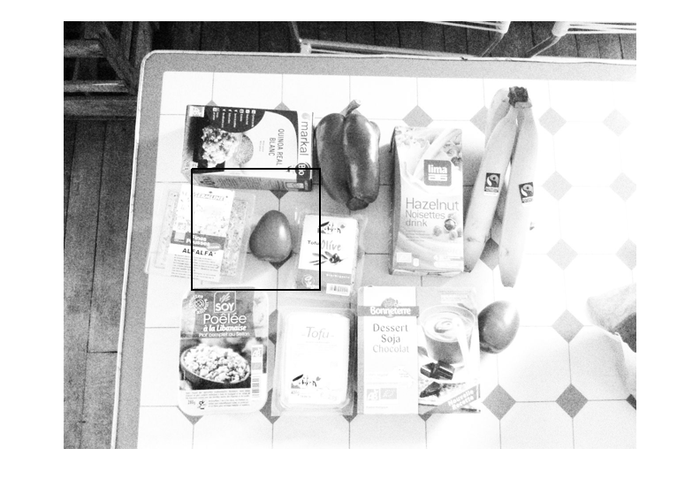

im = imread('vegan-modified.jpg');
im_template = imread('soy-dessert.jpg');
im = imresize(im, 0.5);
im_template = imresize(im_template, 0.5);
im_template = double(im_template);
window_size_x = size(im_template, 1);
window_size_y = size(im_template, 2);
window_size_x_half = floor(window_size_x/2);
window_size_y_half = floor(window_size_y/2);
screen_size_x = size(im,1);
screen_size_y = size(im,2);
starting_x = 1 + window_size_x_half;
starting_y = 1 + window_size_y_half;
ending_x = screen_size_x - window_size_x_half;
ending_y = screen_size_y - window_size_y_half;
rec_x= 0;
rec_y = 0;
rec_width = window_size_x;
rec_height = window_size_y;
flag = 0;
window_sum(1:size(im,1),1:size(im,2)) = 2341395;
for i=starting_x : ending_x
for j=starting_y : ending_y
temp_window = double(im(i-window_size_x_half : i+window_size_x_half, j-window_size_y_half : j+window_size_y_half));
abs_diff = abs(temp_window - im_template);
window_sum(i,j) = sum(sum(abs_diff));
end
if(flag==1)
break
end
end
coordinates = find(window_sum == min(min(window_sum)));
rec_y = (coordinates - (floor(coordinates/size(im,1))*size(im,1))) - window_size_y_half;
rec_x = (floor(coordinates/size(im,1)) + 1) - window_size_x_half;
figure, imshow(im)
hold on
rectangle('Position', [rec_x , rec_y, rec_width, rec_height], 'LineWidth', 2);
